《 АСПЕКТ СОЛНЦЕ-НЕПТУН 》
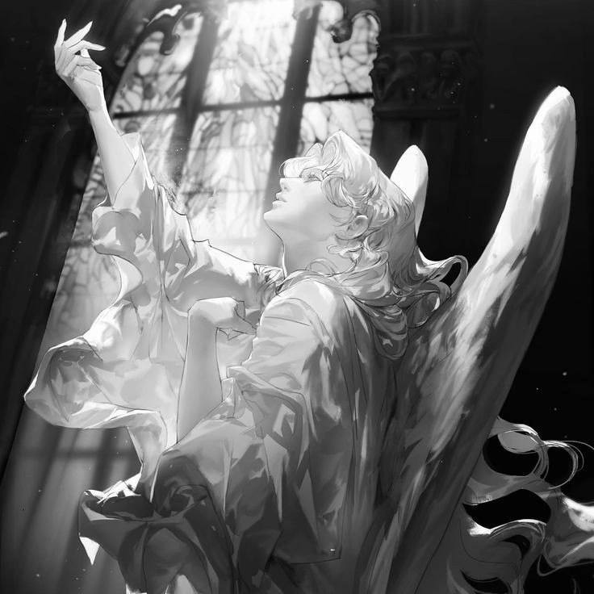
Обладатель данного положения отличается особым очарованием и таинственной аурой. Он не полностью узнаваем как для других, так и для самого себя. Вечно эфирное состояние внутри. Другие люди не могут дать чёткое представление о нём, так как такой человек кажется далёким от чётких выделенных критериев. Натив имеет обостренное чувство интуиции, которое обычно его не подводит.
Если в гармоничном аспекте он сразу обращает внимание на свое внутреннее чутье, то при напряженном аспекте человек также чувствует, но может игнорировать внутренние сигналы, поступая слепо по течению и только после вспомнить. Владелец любит все одухотворенное и идеалистичное, стремится этим и наполнять свою жизнь. Натив наполняет и восстанавливает свои жизненные силы в уединении. Для него это комфортное состояние, что может создавать некоторые сложности с окружающим миром, считая это замкнутостью.
При напряженном аспекте у обладателя и правда может быть много психических щитов и блоков, который он сам тяжело осознаёт и отгораживает себя от реальной действительности. Такому человеку важно научиться не терять концентрацию во время сенсорной перезагрузки. Важно найти здоровый способ восстановления, не теряя связь с реальными обстоятельствами. Такой человек хорошо улавливает тонкие энергетические модели, от чего и могут быть частые перезагрузки. Натив может любить находится во сне и очень часто погружаться в это состояние.
Созидательный, может резко получить творческое состояние и находиться в вдохновляющем потоке. Оригинальность в художественном вкусе, необычный «перевёрнутый», неизведанный «до» взгляд и стиль в выражении себя.
《 АСПЕКТ СОЛНЦЕ-УРАН 》
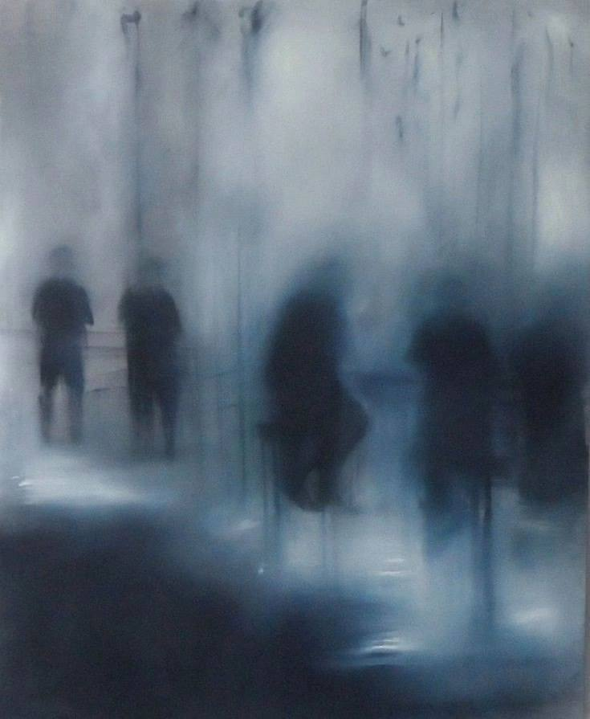 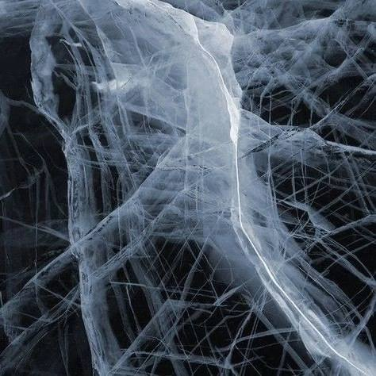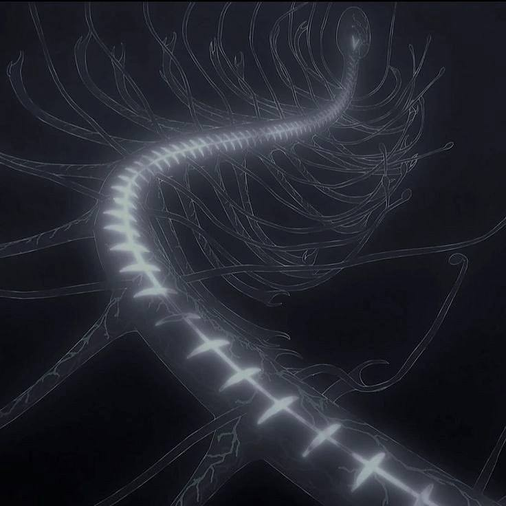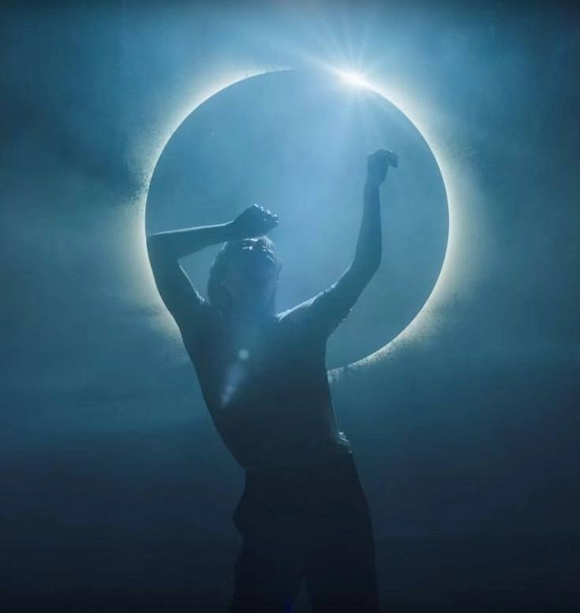
Обладателю данного положения трудно взаимодействовать с обществом, так как обычно имеет "необычные" увлечения, видение, привычки и т.п. которые часто не вписываются в стандартные понятия. Такой человек прогрессивен, любит экспериментировать, пробовать и открывать для себя что-либо новое. Уран делает человека эгоцентриком. Даёт независимость. Он часто ведёт отрешенный образ жизни, находится далеко от остальных на расстоянии и идёт своей дорогой, понятной только ему. Непостоянство характера, бунтарство, резкость и импульсивность в действиях делают такого человека непредсказуемым. Ему не нравится, когда ограничивают и дают советы, поэтому часто поступает ровно наоборот. В течение жизни он не раз столкнётся с тем, что будет резко обрывать связи, "сжигать" и менять направление в своей жизни. Уран отвечает за импульсы и нервную систему , так что при поражении и в целом напряженном аспекте, нативу стоит внимательно отнестись к этому и стараться не изводить себя, научиться расслабляться и быть свободным от обстоятельств. Генератор необычных и оригинальных идей. Творческий, резкий и яркий образ выражения себя, через, казалось бы, "несовместимое". Первооткрыватели в увлечённом для себя деле. Не боятся вызова в массы.
СОЕДИНЕНИЕ ЛИЛИТ-ХИРОН
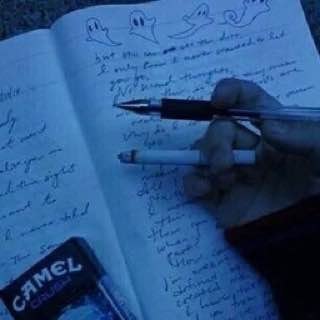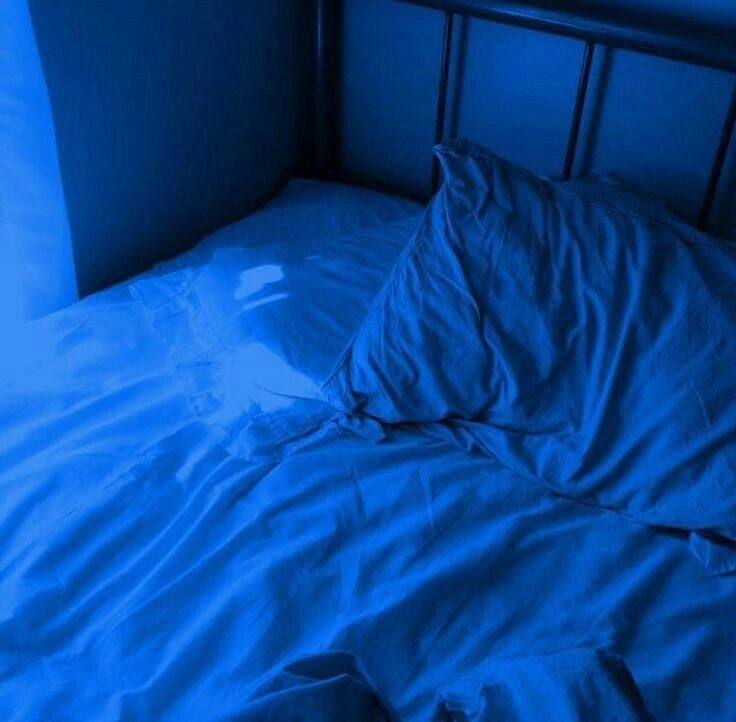
Такое положение говорит о большой работе над своими внутренними травмами. Данный аспект можно сравнить с союзом двух обиженных людей, которые собрались вместе для исцеления. И это действительно так, но для проработки требуется глубокий уровень самосознания и способности принять уязвимость. «Открытая рана» обладателя становится более острой и ощутимой. Сфера дома, где стоит лилит-хирон, становится очень значимой в жизни человека. При таком аспекте легче спуститься в негативное разрушение и поедания тех же самых ран. И для того, чтобы выбраться, нужна огромная сила воли, осознанность и понимание как можно выводить всё в плюс. Хирон символизирует шута или странное непонятное событие, нелепую шутку (человека или судьбы) со скрытым смыслом (с Лилит.) В проработке натив умеет выходить из всех затруднительных ситуаций в жизни, даёт способности и талант в сфере дома, где данный аспект находится.
АСПЕКТ КВАДРАТ МЕРКУРИЙ-НЕПТУН
Натив с таким положением часто воспринимает информацию несколько по иному. У него может обостряться чувствительность к любым высказываниям и часто искажает то, что ему могут говорить. Накручивая и кидая себя в пропасть неясных до конца мыслительных процессов. Он может быть неуверен, а правильно он понимает ситуацию или ему это кажется? С ходом времени он учиться делать паузы для того, чтобы всё обдумать и взвесить все за и против. Ему не хватает думать более реалистично и практично (Люди с сильным положением земли/сатурна, да и в целом с практичным складом пойдут такому человеку на пользу, хоть это может быть немного болезненно, но тем не менее он способен «заземлить» и принимать действительность такой, какая она есть без искажений)
Поговорим же о плюсах данного положения
По наблюдениям нативы с таким аспектом видят очень яркие и красочные сны, не похожие на что-либо. Им могут снится иные миры, другие существа и в целом редкие сюжеты сновидений, которые вдохновляют и рождают свою историю. Те кто имеют аспект Меркурий-Нептун, попробуйте записывать то, что Вам бывает снится. Очень многие по наблюдениям и правда ведут блокнот/дневник куда это записывают. Имеют склонность к писательству. Также нативы с таким положением умеют видеть и создавать собственные «миры» с помощью творчества (это может быть все что угодно: фотография, монтаж, актерство и т.п.)
АСПЕКТЫ АСЦЕНДЕНТА И ПЛУТОНА
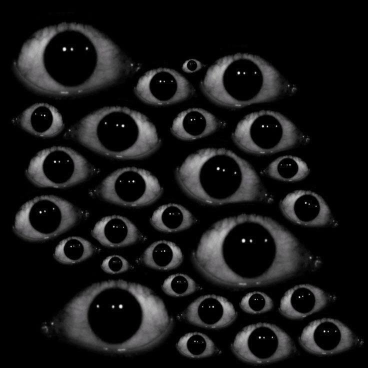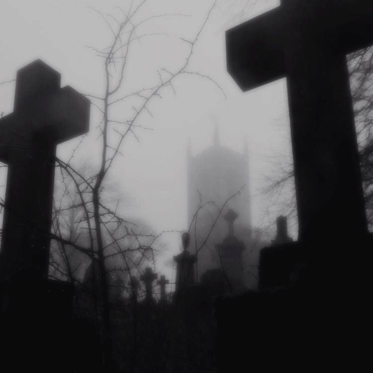
Соединение: вокруг носителя этого соединения ореол тайны или живого магнетизма. Даже если у человека нет никаких поклонников, хотя бы раз в жизни — он точно был кому-то интересен, мог даже сталкиваться с преследованием или одержимостью с чужой стороны.
Они имеют какое-то отрицательное обаяние, могут вселять страх и восхищение одновременно. Вполне себе могут быть упрямы и агрессивны, равнодушны к чужому мнению. Властные и целеустремлённые, если другие аспекты позволяют сделать такой вывод. Таких людей — выделяют их глаза и взгляд, он весьма глубокий и цепкий. Либо они не вписываются в каноны красоты, внешность может быть немного пугающей.
Тригон/секстиль: могут иметь неплохие лидерские качества, людей тянет к ним из-за их силы и уверенности, иногда даже самоуверенности. Близкие люди часто нуждаются в их советах. Высокий уровень концентрации и сильная воля. Оказывают на своё окружение динамичное влияние, когда они пребывают — все начинает двигаться и меняться. Относятся серьезно к жизни и стремятся выносить из неё полезное. Если принимают решение — не отказываются от него в дальнейшем и идут до конца.
Оппозиция: человека при таком положении могут считать некрасивым, или не таким, как все. Либо же наоборот, но они все таки подвергаются сплетням или подставам. Носителя часто воспринимают гораздо более неприятным и странным, чем он есть на самом деле. Но по сути, многие его просто недооценивают. Иногда бывает так, что нужные качества человека проявляются в самый нужный момент, но он сам может не понимать откуда оно взялось вообще. Невероятная проницательность: они могут понять другого человека с полувзгляда, что характерно для любого аспекта с Плутоном. Но тут оппозиция может искусить человека на то, чтобы плести интриги самому или манипулировать. Кризисные моменты только закаляют их характер, а с такой мощью и силой, дарованной Плутоном — они способны преодолеть все препятствия.
Квадрат: данное положение может быть связано с антисоциальным поведением и агрессивностью. Такие люди жаждут переделывать других вместо того, чтобы изменяться самим. Окружающим это всегда не нравится. Отсюда конфликты и возможно гораздо более серьёзные последствия. Они могут навязывать свою волю другим, делая это насильственно. Жизнь такого человека полна кризисов и переломов, но ему нравится стимулирующее воздействие таких ситуаций. Когда все в жизни гладко — они начинают скучать. В этом случае они стараются привнести немного возбуждения в окружающий мир, умело манипулируя ближними/окружающими в собственных интересах. Несогласных людей они обвиняют, и не всегда осознают свою вину.
АСПЕКТЫ НОНАГОНА И МЕРКУРИЯ
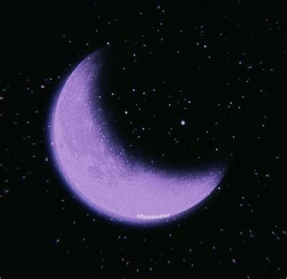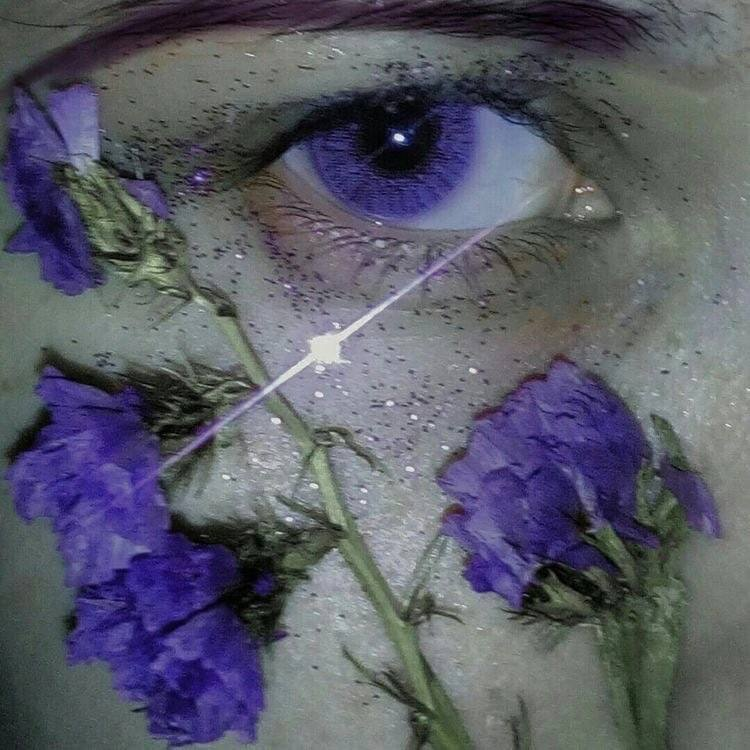